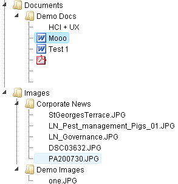

* You can use the context menu (right-click) to perform section actions like delete or add.
Create Directory Create Directory
Create a new media directory inside the site's database Upload File Upload File
Upload a file into the site's database Delete Asset / Dir Delete Asset/Directory
Delete the currently selected media asset/directory
